Fase de Choque
Dias 1 a 7O momento de entrar no protocolo, organizar a rotina e parar de negociar com aquilo que você decidiu fazer.
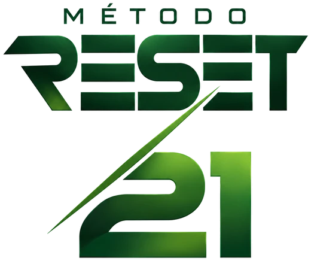
Assista ao vídeo com som ligado
Programa de emagrecimento · 21 dias
Um protocolo de 3 semanas com alimentação organizada, treino e cardio para quem cansou de começar uma dieta, parar no meio e voltar sempre para o mesmo lugar.
Resultados individuais podem variar.
O que é o Reset 21
O Método Reset 21 é um programa digital de emagrecimento criado pelo nutricionista Lucas. Durante 3 semanas, você segue um passo a passo dentro do aplicativo: o que comer, como treinar e o que fazer em cada fase.
Sua alimentação organizada individualmente dentro do aplicativo, acompanhando cada fase do protocolo.
Área de treinamento com a divisão completa para as três semanas.
Orientações de cardio para somar ao treino durante o protocolo.
Hidratação, fome e saciedade, trocas alimentares, comportamento e suplementação quando indicada.
Para quem é: para quem quer emagrecer, já tentou várias dietas sozinho e precisa de uma direção clara para seguir do primeiro ao último dia.
Se você já passou por isso
Você provavelmente já sabe como é:
↻ E começa tudo de novo.
Durante 21 dias você não precisa descobrir uma nova estratégia todos os dias. Você precisa seguir uma.
Resultados reais
Pessoas diferentes, rotinas diferentes, resultados individuais. O ponto em comum é ter uma direção e executar.
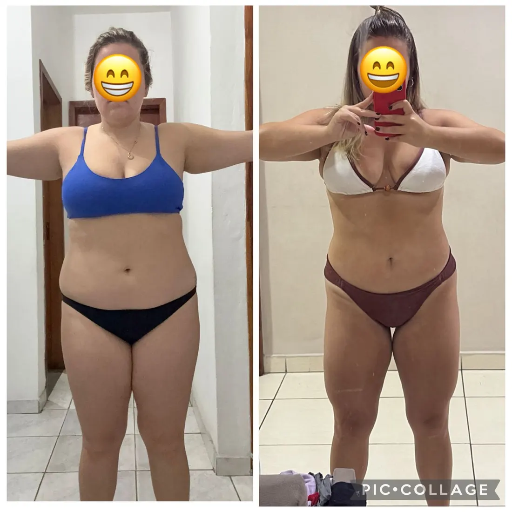
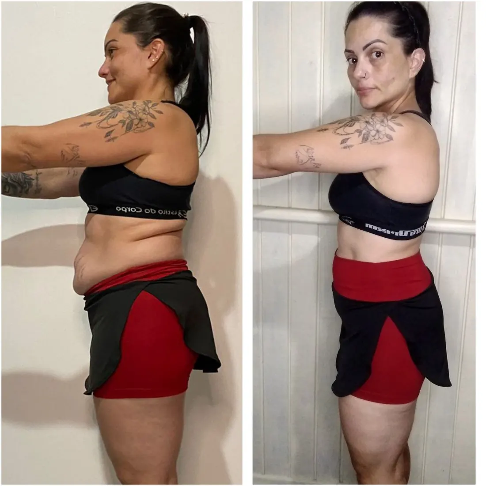
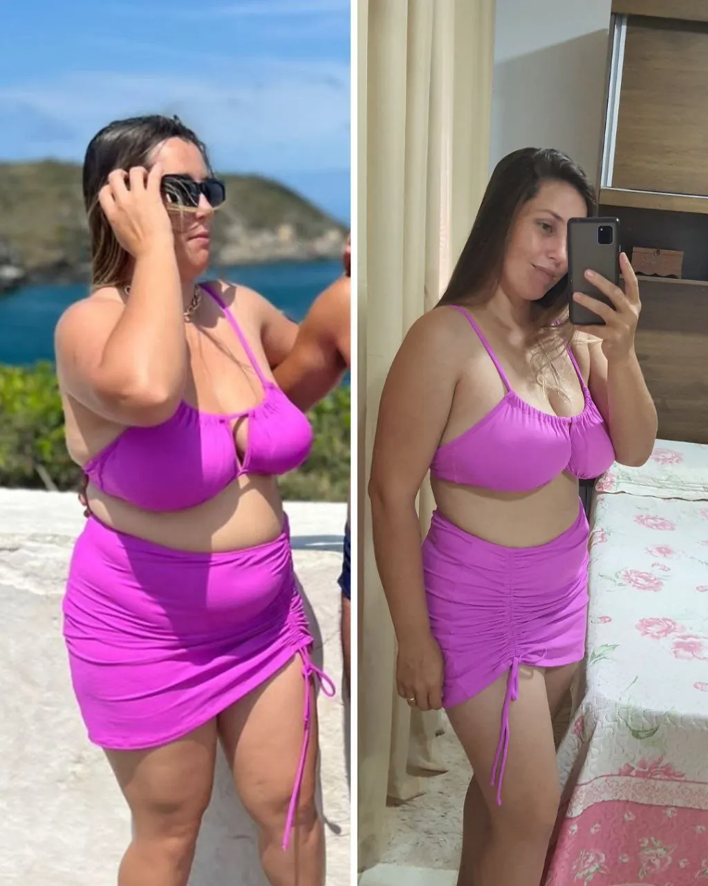
Resultados são individuais e podem variar.
Como funciona
O Reset 21 não repete a mesma estratégia até o último dia. O protocolo avança em três etapas de sete dias.
O momento de entrar no protocolo, organizar a rotina e parar de negociar com aquilo que você decidiu fazer.
Depois do início, o objetivo é continuar avançando sem depender apenas da motivação dos primeiros dias.
Os últimos sete dias fecham o ciclo e levam você até o Dia 21 com uma estratégia definida.
Quem criou o Reset 21
Antes de ensinar transformação, o nutricionista Lucas precisou viver a dele.
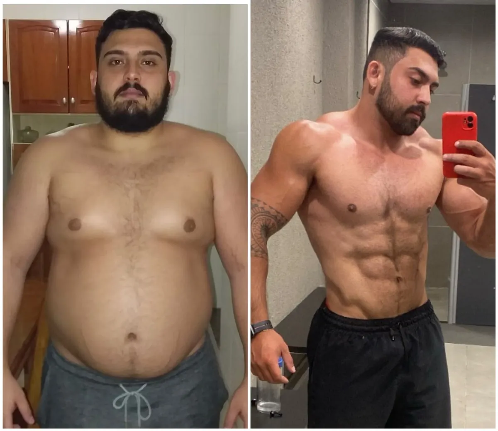
AntesDepois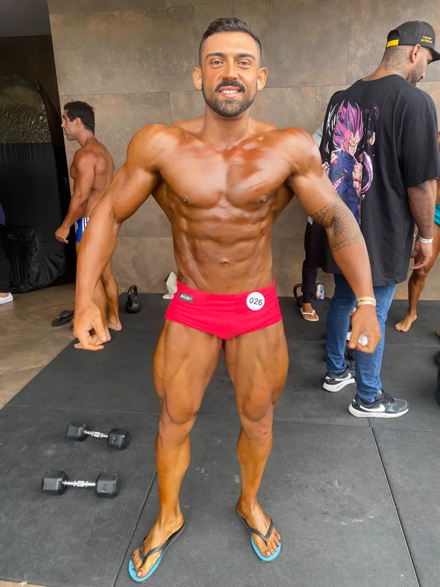
Lucas sabe que transformar o corpo não é simples porque ele também já esteve do outro lado.
Antes de orientar outras pessoas, ele precisou mudar a própria realidade: saiu da obesidade, transformou seus hábitos, mudou completamente sua composição corporal e levou essa evolução até os palcos do fisiculturismo.
Por isso o Reset 21 junta as duas coisas: o conhecimento técnico de nutricionista e a experiência de quem viveu o processo.
Existe a visão do nutricionista. E existe a experiência de quem já olhou para o próprio corpo e decidiu que alguma coisa precisava mudar.
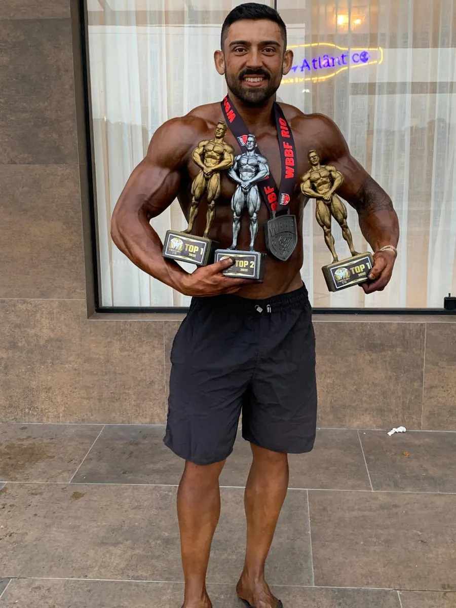
O que tem dentro
São 9 módulos que acompanham você do primeiro dia até o momento de voltar à rotina depois do protocolo.
Como funciona o protocolo, como usar a plataforma e como se preparar para o Dia 1.
O que executar em cada dia da primeira semana.
A segunda etapa do protocolo, para continuar avançando.
A reta final até o Dia 21.
Fome, saciedade, hidratação e o que esperar ao longo das três semanas.
Orientações nutricionais, trocas alimentares e comportamento no dia a dia.
Treinos A, B, C e D e as orientações de cardio.
Quando a suplementação faz sentido e quando não é necessária.
Como continuar o processo sem abandonar o que foi construído.
+ 5 bônus incluídos
Cada bônus resolve um problema específico que pode aparecer durante os seus 21 dias. Todos já fazem parte do seu acesso.
Opções de substituição para quando você precisar adaptar a alimentação, sem abandonar o protocolo.
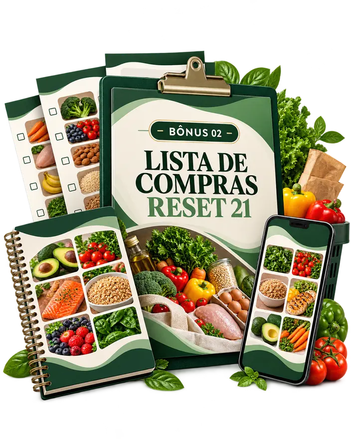
Para organizar as compras e a alimentação durante todo o protocolo.
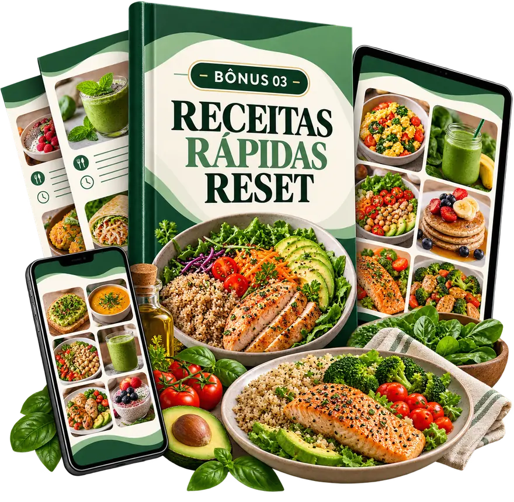
Opções práticas para a rotina, para você não achar que seguir o plano exige receitas complicadas.
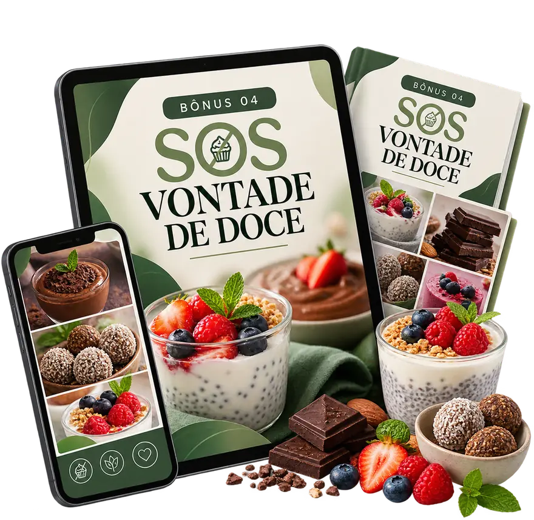
Para os momentos em que aparece uma vontade forte de doce durante o protocolo.
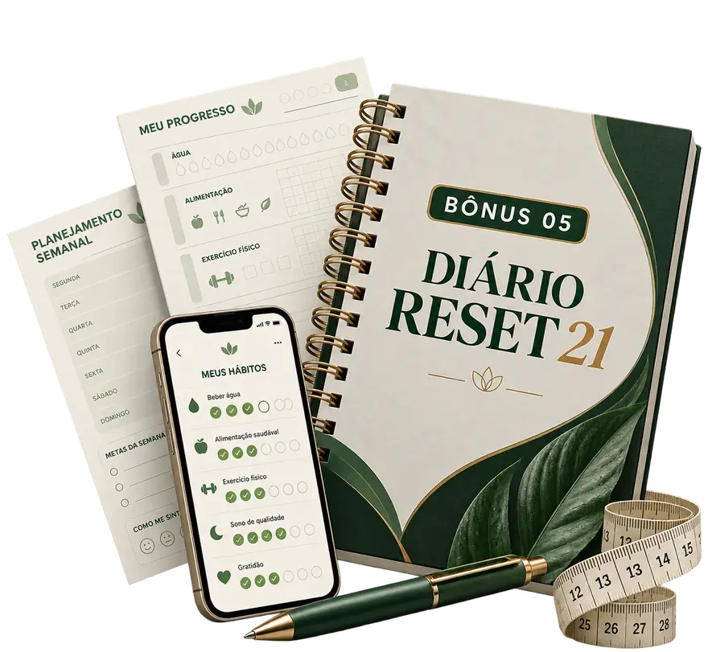
Para acompanhar sua jornada, sua rotina e sua evolução ao longo dos 21 dias.
Seu acesso completo
O protocolo completo, as três fases, treino, cardio e todos os bônus fazem parte do seu acesso.
Você não vai pagar R$ 633 para começar.
De R$ 633,00
Hoje por
R$37,90
Pagamento único · menos de R$ 1,81 por dia durante os 21 dias
Quero começar meu Reset 21Sobre o acesso: a plataforma fica disponível durante os 21 dias do protocolo. No 22º dia, o acesso se encerra.
Resultados individuais podem variar.
Seu próximo Dia 1 pode ser hoje. Você não precisa pensar nos próximos seis meses. São 21 dias.
Perguntas frequentes
A diferença é como você quer chegar lá.
Acesso digital por 21 dias · Resultados individuais podem variar.